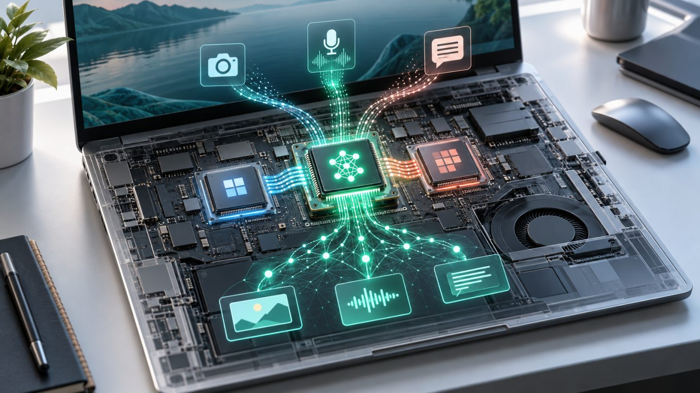

What Is an NPU, and Why Do Modern Computers and Phones Need One?
NPUs are becoming common in laptops, phones, and tablets, but they do not replace the CPU or GPU. An NPU is specialized hardware designed to execute neural-network calculations efficiently, especially for AI workloads that run continuously on the device.
What is an NPU?
NPU stands for Neural Processing Unit. It is optimized for operations frequently used by machine-learning models, including matrix multiplication and highly parallel data processing. Instead of handling every kind of computing task, an NPU focuses on AI inference: applying an already-trained model to recognize, classify, or generate a result.
NPUs are commonly integrated into a system-on-chip alongside the CPU, GPU, and memory controllers. Each engine can handle the work it does best, helping the device remain responsive while controlling power consumption and heat.
How do the CPU, GPU, and NPU differ?
| Processor | Strength | Typical work |
|---|---|---|
| CPU | Flexible, responsive, strong at sequential logic | Operating system, applications, system coordination |
| GPU | High parallel throughput for graphics and large computations | 3D graphics, rendering, AI training, and demanding inference |
| NPU | Neural-network specialization and power efficiency | Background AI, camera, audio, recognition, and local models |
These boundaries are not absolute. An application may use all three: the CPU prepares data, the NPU runs a model, and the GPU displays the result. The operating system and AI runtime select hardware according to model compatibility, drivers, and available acceleration.
Why run AI on the device?
- Lower latency: data does not need a round trip to a server, which helps camera, calling, and real-time interactions.
- Offline operation: some features remain available with weak or no internet access.
- Power efficiency: an NPU can sustain suitable AI workloads with less power and heat than a CPU or GPU.
- Less data leaving the device: local processing can support privacy for personal audio, images, and documents.
Local processing does not guarantee privacy by itself. An application may still upload inputs or results, so its permissions and data policy still matter.
What does an NPU do today?
Common workloads include noise suppression, background effects, camera framing, speech recognition, OCR, image description or enhancement, translation, and local summarization. In phones, the NPU also contributes to computational photography, including scene recognition, HDR processing, and subject segmentation.
An NPU is particularly valuable for continuous workloads. Instead of activating the GPU for every webcam frame or audio segment, the system can assign sustained inference to the NPU and leave the CPU and GPU available for the main application.
What is TOPS, and why is it not the whole story?
TOPS means trillions of operations per second and usually describes theoretical peak AI compute. It can be useful when measurements use the same conditions, but it is not a complete performance score.
Real results also depend on numerical precision, sparse-data assumptions, memory bandwidth, model size, the software runtime, and application optimization. Two NPUs with similar TOPS ratings may differ substantially in speed, power use, and supported models.
Software determines whether the NPU is useful
A capable NPU helps only when the operating system, driver, runtime, and application support it. If model operators are incompatible, the application may move part or all of the work to the CPU, GPU, or cloud.
When buying a device for specific software, check that application's documentation instead of relying on an “AI PC” label. Acceleration for video-call effects does not mean the system will run every generative model efficiently.
How to choose a device with an NPU
- Define the real workload: video calls, photo editing, coding, transcription, or local language models.
- Confirm that the application and operating-system version support the platform's NPU.
- Evaluate RAM, memory bandwidth, CPU, GPU, battery life, and cooling as a complete system.
- Compare TOPS only under equivalent data types and measurement conditions.
- Prefer tests using the actual applications and models you plan to run.
Limitations to remember
An NPU does not make every application AI-enabled, and it does not have enough memory for every large model. Vendor software ecosystems still differ, while workloads requiring fresh information or enormous models often remain better suited to the cloud. Hybrid designs are therefore common: the device handles sensitive or latency-critical steps, and servers perform heavier work.
Conclusion
An NPU is a specialized compute engine that complements the CPU and GPU. Its main value is sustaining local AI with lower latency, power use, and heat. When choosing a device, prioritize software support and the complete system over the largest TOPS number.